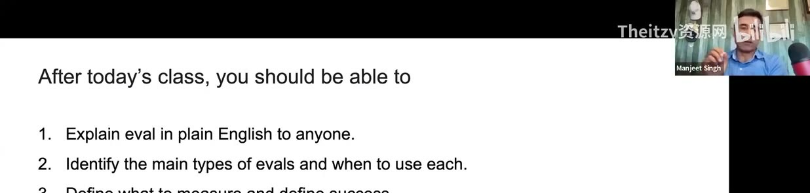

Chapter 01 · P1 00:00–25:00
开场：这门课为什么值得学
第一堂课的前 25 分钟没有任何评估技术——全是定位：讲师是谁、这门课与市面课程有何不同、你将拿到什么、以及一个贯穿全程的论断："当人人都能构建时，判断力与品味才是门槛。"
1.1课程定位："in practice"不是修辞
讲师背景自述：CS 本科 → 十年软件工程师 → 因团队 PM 离职转做产品 → 现在负责 Salesforce 的 Agentforce（面向客服/销售/营销的 AI Agent 平台）。他刻意把课程命名为"AI Evals in Practice"，并解释了为什么不泛泛讲 eval：
以 Agent 为"北极星"
"These AI agents cover RAG, model-level evals, prompt-level evals, multi-tool calling… if you can learn how to evaluate your agents, pretty much everything is covered."（P1 02:06）相比大量只讲模型评测的在线课程，本课主打 Agent 评测。
反"链接式学习"
"Search 'what is AI eval' and you'll find 1000 links and still find yourself confused."（P1 02:50）传统测试观（单元测试/回归测试）与"测试非确定性系统"之间的冲突，正是要解构的对象。
1.2十项学习目标（原片幻灯片 04:37）
- 把 evals 讲清楚（对同事、对老板、在电梯里）
- 错误分析作为核心技能
- Eval 思维，而不只是工具
- 如何定义"什么是成功"
- 构建你的第一个 eval
- AI 指标 与 业务指标
- 创建你的第一个 eval（rubric 化练习）
- 如何形成你自己的"品味"（taste）
- 理解局限性与影响（组织协作层面）
- 面试场景：如何谈论 AI evals
以上转写自 04:37 的 "Learning Objectives" 幻灯片；个别条目受分辨率所限按上下文补齐。
1.3课堂机制：为什么设计成"作业 + 答疑 + 互看"
每周三 5pm PST 直播 + 周一 Office Hours
每节讲完留 Q&A 段；课后问题进社区 Q&A 区，"当天或 24 小时内答复"。（P1 13:05 / 157:49）
"Show your work" 机制
作业上传到专属板块，讲师逐份查看并在下节课点评优秀作业——"看到你用 eval 概念解决自己的问题"比抄 demo 更有价值。（P1 16:05 – 17:57）
共享记录表
学员在 Google Sheet 登记作业（开场时已有 32 条）。规则："别删他人记录，只在末尾追加。"（P1 170:22）
讲师用评估思维设计课程本身
课前学员填"期望收获"，讲师用 AI 汇总校准每节课；课上请大家自评 1–10 分，"第六周再测一次，看有没有进步"——"I'm doing the eval on myself."（P1 12:18 / 166:01）
1.4三份 Bonus：课程的经济学设计
① 未出版的书
讲师正在审校的 single/multi-agent eval 案例集，结课免费发——"but it comes with effort. You need to show your work."
② Braintrust 额度
"Evals are not free" 是学员最怕的现实问题；讲师争取到全员免费 org + credits，"填姓名邮箱，课前自动建好"。（P1 21:11）
③ 求职辅导
结课做面试演练："After this course you will be dangerous enough to crack your interview."（P1 24:04）
1.5课程入门视频：19 分钟的"问题宣言"
课程平台首页嵌了一支约 19 分钟的导览视频《The Unexpected Journey of AI Deployments》（Instructor 出镜），讲师现场打开预览给学员演示"去哪找材料"。它其实就是第一课的问题宣言——用一张 A/B 实验曲线和一块"退化满屏"的指标网格说明：传统的发布方法论救不了 LLM 应用。

视频里还有几个反复出现的判断（后续周次会逐一展开，详见 CH02）：LLM 应用"像 SaaS 一样快速迭代"，但输出非确定性、高方差；A/B 测试"需要巨大样本量"且只给总体胜负、不给分层洞察；于是需要一套"离线的、按场景的、可回归的"评估体系，甚至要有专职的 Evals 团队与内部工具（见 图表 09）。
1.6一个论断：构建变容易后，什么变贵了？
这条论断是整门课的价值主张：评估体系就是把"判断力与品味"工程化的装置——把人的 taste 变成可度量、可复现、可自动化的标准。后半程他还会讲"eval 驱动"如何外溢到 PRD、GTM、甚至销售话术（CH02 · 6.3）。